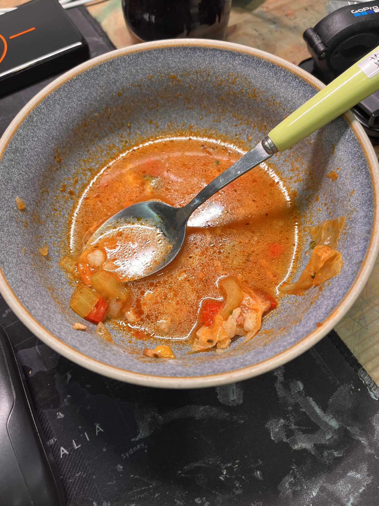
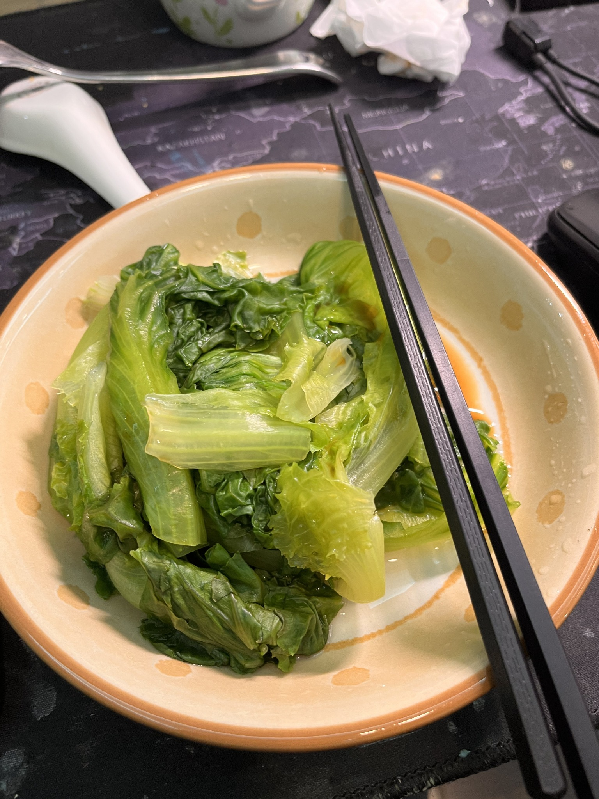
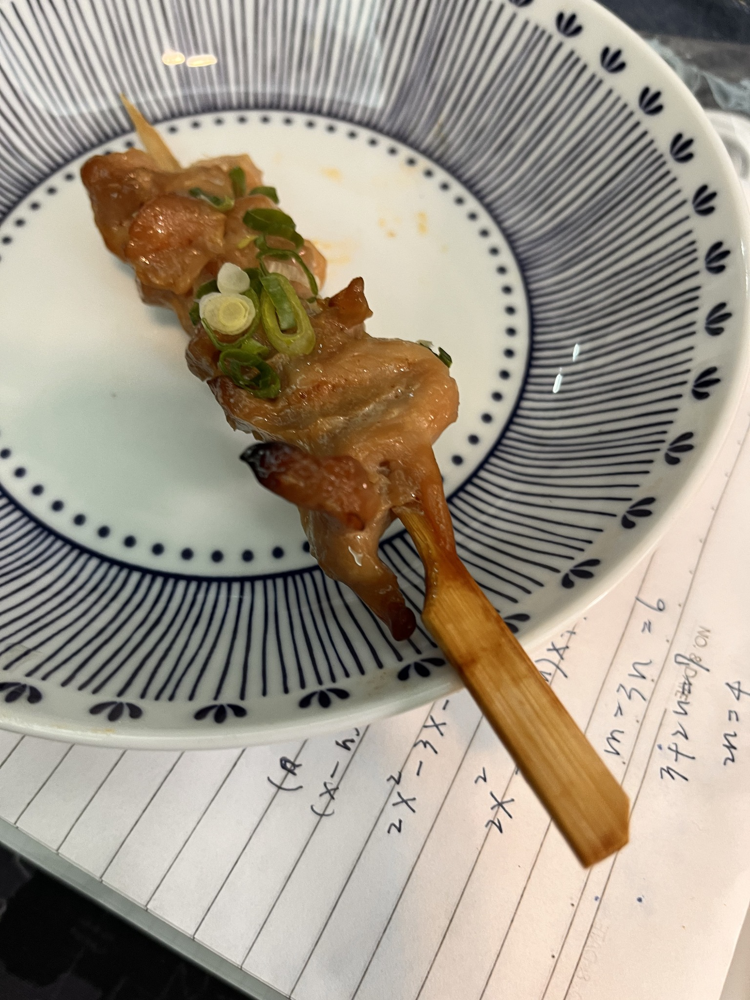
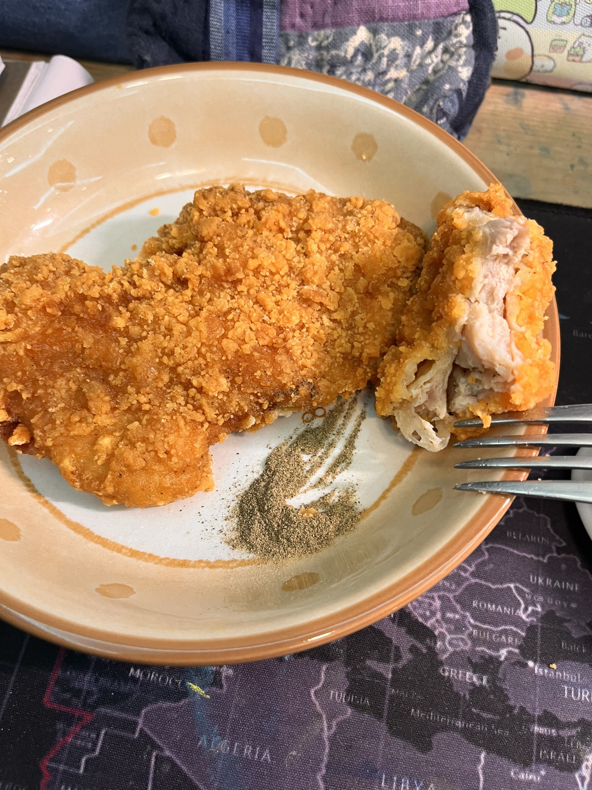

飲食紀錄 / 2026-11-20
日式炸雞排、烤雞串與蔬菜湯
約 1,000 kcal
合理估計範圍：851–1,181 kcal
估計 56–80 g
估計 45–85 g
估計 40–65 g
本餐總熱量及三大營養素為估計，並非實測。份量、裹粉、吸油量及醬汁會影響結果。湯品僅熱量採提供數值，其營養素仍屬估算；各項數字經取整，換算熱量可能略有差異。
使用者提供的四張原始照片。



